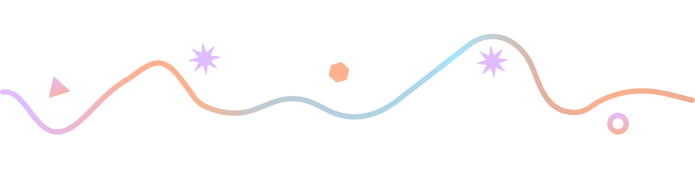
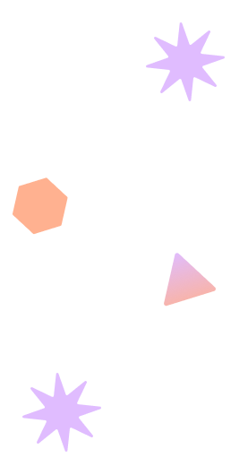
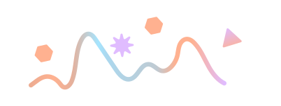
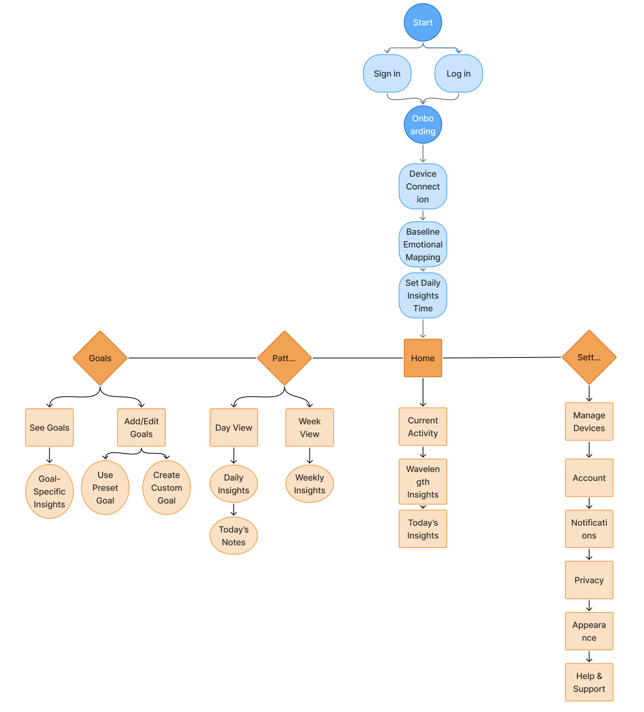
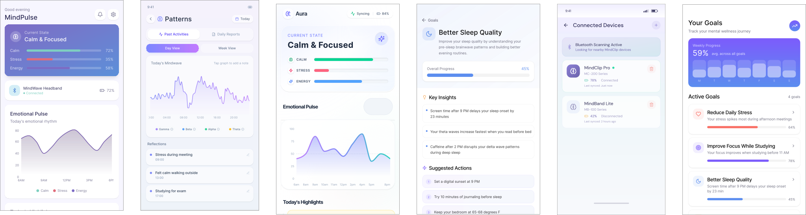
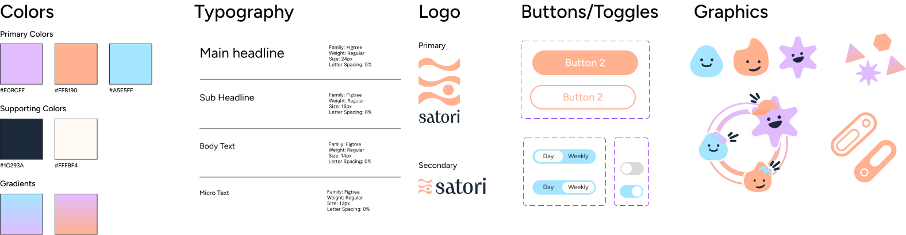

Satori
Satori is a wearable health tracker and platform that helps people understand their emotions and habits through wearable brainwave tracking and AI-driven insights.



Satori is a wearable health tracker and platform that helps people understand their emotions and habits through wearable brainwave tracking and AI-driven insights.

For Figma's annual design hackathon, Figbuild, we were given a speculative design prompt:
Design a tool that tracks, measures, visualizes, or quantifies
an aspect of human sensory experience.
We track almost everything our bodies do — steps, heart rate, calories. But the patterns that shape how we think and feel often remain invisible.
But what if we could better understand the mind's hidden patterns?
Trembling fingers before a presentation, hours in bed lost to scrolling, or the urge to reach for a tub of ice cream after a long day can feel disconnected in the moment — but these subtle reactions reveal deeper emotional patterns that are often difficult to notice in real time, leaving us unsure why we felt or acted a certain way.
Satori explores a future where reflection can be supported through wearable brainwave tracking, wave-based visuals, and AI-driven insights. Users can make sense of their emotional patterns and turn self-awareness into meaningful change.
The Satori Clip tracks your brainwaves in real time and maps them against moments in your day. Paired with the mobile app, Satori calculates the science behind your emotions for you.

Satori Clip
Satori App
Satori focuses on using two forms of science to help users:
Mental and emotional states produce distinct electrical frequencies in the brain. Multiple types of brainwaves differentiate emotions — e.g. alpha waves reflecting a calm emotional state.

Focuses on identifying and changing negative or inaccurate thinking patterns and behaviors. Helps manage emotional problems such as depression, anxiety, and PTSD.
We looked at products like the Oura Ring, Apple Watch, and Moodfit to understand how existing tools approach self-tracking.

Introspection is a vital part of personal growth, but it's often inconsistent and difficult to sustain. While tools like therapy and journaling exist, they require time and access that not everyone has.
The flow was designed to feel simple: collect, visualize, reflect, and act.
Users begin by connecting their Satori Clip and setting personal goals. From there, they can view their mindwave patterns, tap into specific moments, and add personal notes. Over time, weekly summaries help them understand recurring patterns and track progress toward their goals.

We started with low-fidelity wireframes to establish the app's core structure and flows. Due to the tight timeline, we prioritized clarity and functionality. The onboarding flow was inspired by Apple's device setup experience to create a familiar introduction for users.

Our iteration process was efficient and intentional. We used Figma Make to move quickly from concept to execution. It helped us generate visual directions and think through how abstract emotional data could be translated into clear insights for users.

Satori's visual language was built around softness and clarity. We used a clean, approachable typeface, rounded components, and soft gradients to create a sense of comfort and ease. The illustrations helped make abstract brain activity feel more personal, giving users a friendlier way to connect with their mindwave data.

01 Onboarding
The onboarding flow introduces the Satori Clip through a simple step-by-step setup. Users learn what the clip tracks, how their data is protected and used, and begin collecting mindwave patterns.
My inspirations drew from meditation apps like Headspace, which had clean flows for guiding users through moments of reflection and mindfulness.
02 Home Screen
The homepage serves as a quick overview of the user's mental state, highlighting real-time brainwave activity.
I wanted the first screen to give users a broad overview of their patterns and give them freedom to explore the app and gain deeper insights.
03 Patterns & AI Enhanced Insights
The Patterns page helps users understand emotional shifts over time by combining data with AI enhanced insights. Users can toggle between day and week views, add notes to their mindwave data, and receive interpretations of patterns alongside their personal experiences.
I designed the note-taking feature to give context to the data. By connecting spikes or dips in waves to real-life moments, users can better recognize patterns in behavior. AI-enhanced insights build on this by identifying recurring trends and offering interpretations aligned with the user's notes.
04 Goals
The Goals page connects emotional awareness to behavior change. Users can choose preset goals or create custom ones, receiving personalized insights based on their mindwave patterns over time.
I designed this feature to make reflection actionable. It helps users take the next step, with full customization or AI support to refine their goals.
Imagining future technology pushed me to think beyond current constraints and expand my creative approach. I learned a lot about how to create visuals that make abstract data feel tangible!
Since emotional data is deeply personal, the AI experience needed to feel like a guide rather than an authority. This helped me think more carefully about tone, privacy, and the difference between providing suggestions versus conclusions.
The 3-day timeline pushed our team to move quickly and make intentional decisions. When faced with countless design choices, returning to our product goals helped us decide what mattered most.

Redesigned QCSA's central platform, driving a 52% increase in engagement.